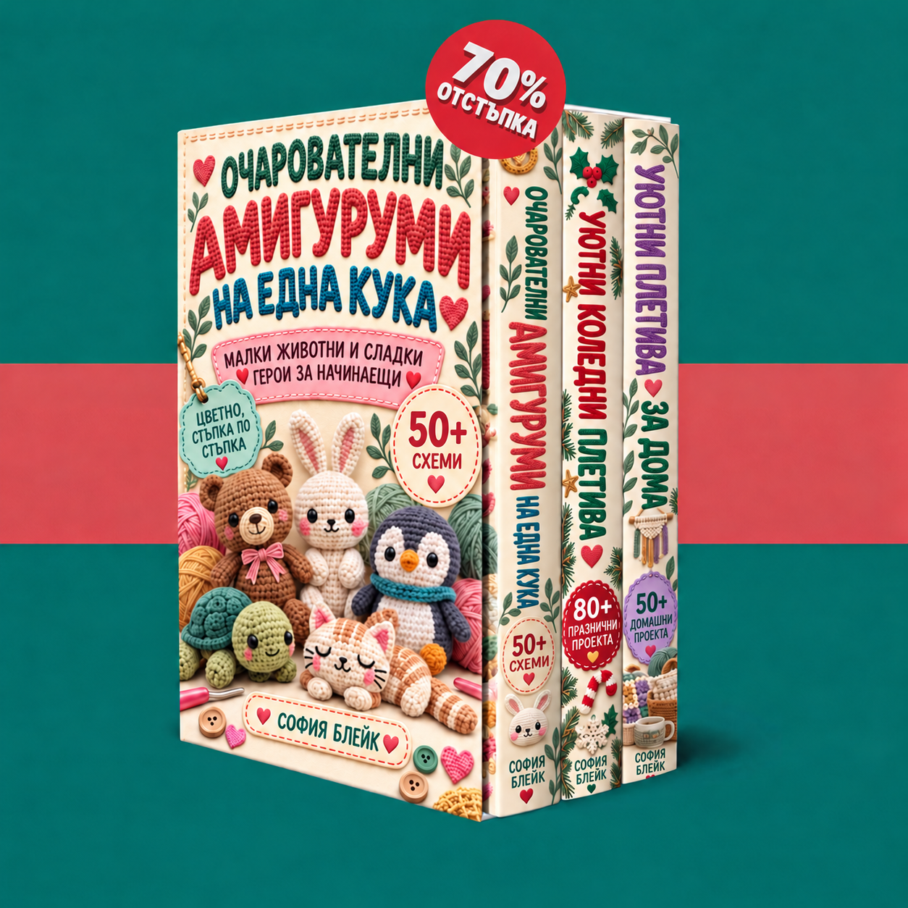

Добре дошли във вашата колекция. Разгледайте трите книги и започнете с малки животни, коледни украси или уютни проекти за дома.

Книгите се зареждат…
Включете JavaScript, за да използвате зоната за членове. Можете да отворите PDF файловете и чрез връзките по-долу.